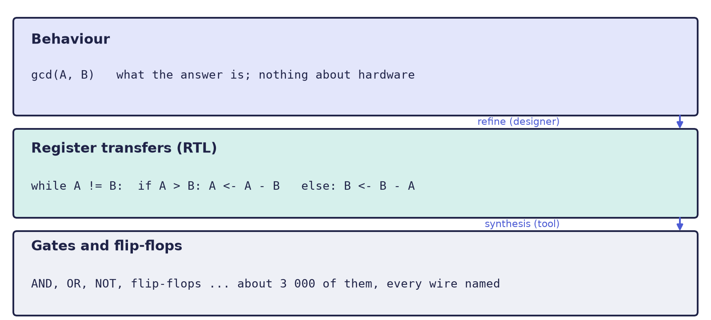
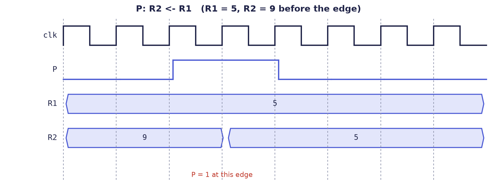
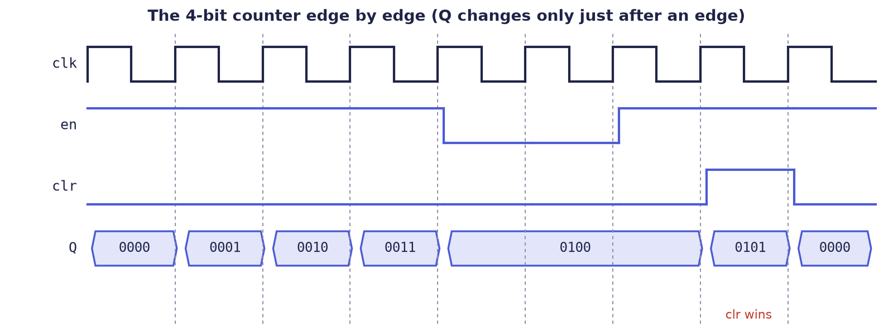

Chapter 1: Registers, the Clock and Microoperations¶
This chapter introduces the abstraction on which the rest of the book depends. It explains why designers describe hardware as data moving between registers, defines the vocabulary (register, clock, microoperation, control function), shows the four families of microoperations, and ends with a complete small design, a 4-bit counter, taken from a specification to a table of microoperations to working code. After it you will be able to read and write statements such as P: R2 ← R1, and to say exactly what they mean for the hardware.
1.1 Why describe hardware at all?¶
A modern processor contains billions of transistors, and nobody draws them. Instead, designers write a description of the machine, in text, and rely on software to turn the description into a circuit. The question is what the description should say.
Think of a chip as a small factory. Registers are the shelves: small boxes of flip-flops, each holding one number. Combinational logic is the workstations (adders, comparators, multiplexers), which compute but remember nothing. The clock is the factory whistle: at each tick, every shelf takes in its new contents at the same moment. Control is the foreman, who decides which shelf receives what on each tick.
There are three useful ways to describe the same machine. Suppose we want a circuit that finds the greatest common divisor of two numbers \(A\) and \(B\).
- The behavioural description is
gcd(A, B). It says what the answer is and nothing about hardware, so nothing can be built from it directly. - The gate-level description is a netlist of AND gates, OR gates, inverters and flip-flops, perhaps three thousand of them, with every wire named. It is exact, but it is far too detailed for a person to reason about.
- The register-transfer description says which registers exist, what is computed from them, and when each one changes:
while A != B:
if A > B: A <- A - B
else: B <- B - A
The third level is the register transfer level, or RTL. It sits deliberately between the other two.

Definition: Register Transfer Level
Register Transfer Level (RTL) is a design abstraction that models a synchronous digital circuit as the flow of data between registers, and the logical operations performed on that data, all sequenced by a clock. An RTL description names three things and nothing more: the registers (memory is just a large array of registers), the operations performed on their contents, and the control that decides which operations happen and in what order.
Designers work at this level for two reasons. First, it is the level that a synthesis tool reads: a program that turns an RTL description into a netlist of gates and flip-flops automatically. You write what should move where and when, and the tool works out the gates. Second, it is still small enough for a person to read and to convince themselves that it is correct. You can look at a datapath and a sequence of control steps and see that the machine does the right thing.
An everyday comparison may help. Imagine giving a friend directions to your house. "Come to my house" is too vague to follow (behaviour). "Take bus 12, get off at the third stop and walk 200 m north" is exact enough to follow and short enough to check (RTL). "Lift your left foot 4 cm, move it 70 cm forward, put it down..." is correct, but no one could check it (gates). The middle version names places, moves and moments, which are exactly the registers, the operations and the clock ticks that RTL names.
RTL is a level, not a language
RTL is a level of description, independent of any language. The notation of this chapter is the register-transfer notation of Morris Mano's computer-organisation texts, and it needs no hardware language at all. Verilog and VHDL are languages in which an RTL description can be written down so that machines can read it. The same languages can also express things that are not RTL, such as delays and file input, and those cannot be synthesized.
1.2 Registers and the clock¶
A register is a group of flip-flops that stores a multi-bit value until it is told to load a new one. A register is given a short symbolic name: R1, R2, or a name that says what it is for, such as PC (the program counter, which holds the address of the next instruction), AR (the address register) or ACC (the accumulator, in which results build up). Its bits are numbered from 0 at the right.
Everything in a synchronous system is paced by the clock. The instant at which the clock rises from 0 to 1 is the rising edge, and on that instant every register that is enabled loads its new value simultaneously. Between edges, the combinational logic in front of each register is still working out the next value; it settles well before the next edge, and the register ignores it until then.
The consequence is the rule that makes digital hardware predictable: a register changes only on clock edges, never in between. A "transfer" is therefore not a gradual thing. It happens atomically, at one edge.
1.3 Microoperations¶
A microoperation is an elementary operation on the contents of registers that completes in a single clock pulse. The fundamental one is the register transfer, written with an arrow:
R2 <- R1 at the next clock edge, R2 receives a copy of R1
R1 is not changed: a transfer copies, it does not move.
Conditional transfers¶
Most transfers must not happen on every clock edge. A Boolean condition written before a colon, called a control function, says when:
P: R2 <- R1 if P = 1 at the edge, R2 gets R1; if P = 0, R2 keeps its value
In hardware, P drives the load input of R2. Figure 1.2 shows the timing. The signal P is high around the third edge, so R2 loads R1 (here 5) at that edge and not at the others.

Simultaneous transfers¶
Several transfers can be listed together, separated by commas. A comma means "in the same clock pulse":
T3: R1 <- R2, R2 <- R1
All the right-hand sides are read first, from the old values; then every left-hand side is written at the edge. That is why this single line swaps two registers: no temporary register is needed.
Example 1.1: the swap in one clock pulse
Let \(R1 = 5\) and \(R2 = 9\), and let T: R1 ← R2, R2 ← R1.
- With
T = 1, at the edge both right-hand sides are sampled:R2supplies 9 andR1supplies 5. - Both registers then load at once:
R1takes 9 andR2takes 5. - Result:
R1 = 9,R2 = 5. A clean swap. - With
T = 0nothing loads and the registers stay atR1 = 5,R2 = 9.
Had the first transfer taken effect before the second one read its source, R1 would hold 9 when R2 ← R1 was evaluated, and both registers would end at 9. This is the single most common misunderstanding of RTL, and it is the reason hardware languages distinguish two kinds of assignment (Chapter 3).
The four families¶
Every microoperation belongs to one of four families, and every datapath you will meet is assembled from them.
| Family | What it does | Symbols | Example |
|---|---|---|---|
| Transfer | copies data unchanged | ← |
R2 ← R1 |
| Arithmetic | add, subtract, increment, decrement, complement | + − R+1 |
R3 ← R1 + R2 |
| Logic | bit-by-bit Boolean operations | ∧ ∨ ⊕ and a bar for complement |
R1 ← R1 ⊕ R2 |
| Shift | moves bits left or right | shl shr cil cir |
R1 ← shl R1 |
Here ∧ is AND, ∨ is OR, ⊕ is exclusive-OR, and a bar over a name means the bitwise complement. The operations shl and shr shift left and right, filling with 0, while cil and cir rotate (circular shift left and right), so that the bit that falls off one end re-enters at the other.
Example 1.2: four microoperations on the same registers
Start every line from \(R1 = 0110\) (6) and \(R2 = 0011\) (3).
| Microoperation | Working | Result |
|---|---|---|
R3 ← R1 + R2 |
0110 + 0011 | 1001 (9) |
R1 ← R1 ⊕ R2 |
0110 ⊕ 0011, a 1 wherever the bits differ | 0101 |
R1 ← shl R1 |
0110 moves one place left, a 0 enters at the right | 1100 (12 = 6 × 2) |
R2 ← R2 complemented |
every bit of 0011 flips | 1100 |
A left shift doubles a number. Hardware uses this everywhere, because a shift is only wiring, and wiring is far cheaper than a multiplier.
Subtraction needs no subtractor¶
Subtracting is the same as adding the two's complement: \(R1 - R2 = R1 + \overline{R2} + 1\). An ALU that can add and complement can therefore also subtract, and the carry-in of the adder supplies the "+ 1" at no cost.
Example 1.3: 6 − 3 with an adder
With \(R1 = 0110\) and \(R2 = 0011\):
R1 0110 6
not R2 1100 complement of 0011
+ 1 1
------------------
1 0011 keep 4 bits: 0011 = 3
The carry out of the top (the leading 1) is discarded. Spotting reuse like this is the first payoff of thinking in RTL: one adder, several operations.
1.4 Common misconceptions¶
Three beliefs trip up almost everyone at first.
Misconception: the arrows run in order, like a program
No. Transfers in one pulse happen together: all old values are read, then all registers load at the edge. That is why R1 ← R2, R2 ← R1 swaps. Treating register transfers as sequential program statements is the most common RTL error.
Misconception: RTL is just a coding style
No. It is a level of description. You can write RTL on paper with no language, and you can write Verilog that is not RTL at all (with delays such as #10, which have no meaning in silicon).
Misconception: the adder works for the whole cycle
No. In R3 ← R1 + R2 the addition is combinational and settles quickly. The register is the timed element: the clock edge decides when the answer is captured, not how long the adder works.
1.5 A worked design: a 4-bit counter¶
We now take a small machine from specification to hardware. We want a 4-bit register \(Q\) that counts up. It has two control inputs: clr clears \(Q\) and has priority, and en lets the register count. There is exactly one datapath register (\(Q\)) and two control signals, so the whole design is captured by a short table of conditional transfers.
| When | Control function | Microoperation | Effect |
|---|---|---|---|
| Clear | clr |
Q ← 0000 |
back to zero |
| Count | clr'·en |
Q ← Q + 1 |
up by one; 1111 wraps to 0000 |
| Hold | clr'·en' |
Q ← Q |
unchanged |
(A prime marks a complemented control signal: clr' is "clr is 0".) The hold row needs no hardware, because a register that is not told to load simply keeps its value. The design is therefore two conditional transfers.
Figure 1.3 traces the counter edge by edge. Each edge sees the values of en and clr that were present just before it. At the first four edges en = 1 and clr = 0, so \(Q\) counts 0001, 0010, 0011, 0100. For the next two edges en = 0, so \(Q\) holds 0100. Then en returns and \(Q\) counts to 0101; at the next edge clr is 1, and although en is also 1, the clear wins and \(Q\) jumps to 0000.

The table translates into Verilog line for line. The language is taught in Chapters 3 to 5; for now, simply look for the shared shape: one row of the table, one line of code.
always @(posedge clk) begin
if (clr) Q <= 4'b0000; // clr: Q <- 0000
else if (en) Q <= Q + 1; // clr' & en: Q <- Q + 1
// otherwise Q holds its value by itself
end
The condition clr is tested first, so it wins, which is exactly the priority that the specification asked for. Reversing the order of the two tests would give en priority over clr, a different machine.
1.6 Summary¶
- RTL describes a clocked circuit as registers + operations + clock + control. It lies between vague behaviour and unreadable gates, and it is the level that synthesis tools read.
- The unit of work is the microoperation, written
P: R2 ← R1: a conditional transfer completed in one clock pulse. - Microoperations come in four families: transfer, arithmetic, logic and shift. Subtraction is addition of the complement.
- Transfers in one pulse are simultaneous: every right-hand side is read from the old values before any register changes.
- A register changes only at clock edges. The clock edge decides when a result is captured; the combinational logic only has to settle before it.
- A small machine can be specified completely by a table of control functions and microoperations, and the table maps directly to code.
1.7 Exercises¶
Exercise 1.1 (register transfers on paper). Registers are R1 = 5 and R2 = 9, and P is a 1-bit flag. The microoperations are P: R1 ← R2, R2 ← R1 and P': R1 ← R1 + R2. For each value of P, give the contents of R1 and R2 after one clock edge. Explain why the swap needs no temporary register, and what would go wrong if the two transfers were executed one after the other as in a program.
Answer
P |
Microoperation that fires | R1 after the edge |
R2 after the edge |
|---|---|---|---|
| 1 | R1 ← R2, R2 ← R1 |
9 | 5 |
| 0 | R1 ← R1 + R2 |
14 | 9 |
Both registers sample their inputs at the same edge, so each takes the other's old value and no temporary register is needed. Executed one after the other, the first transfer would change R1 before the second one read it, so R2 would receive the new R1 (that is, 9), and both registers would end up equal to 9.
Exercise 1.2. Start from R1 = 0110 and R2 = 0011. Give the result of each of these microoperations: R3 ← R1 ∧ R2; R3 ← R1 ∨ R2; R1 ← cil R1; R2 ← cir R2.
Answer
AND is 1 only where both bits are 1: 0110 ∧ 0011 = 0010. OR is 1 where either bit is 1: 0110 ∨ 0011 = 0111. Rotating 0110 left by one place moves the top bit (0) to the right end: 1100. Rotating 0011 right by one place moves the low bit (1) to the top: 1001.
Exercise 1.3. Compute 9 − 4 on 4-bit registers using only addition and complement. What does the carry out of the top bit tell you?
Answer
\(9 = 1001\) and \(4 = 0100\), so \(\overline{4} = 1011\). Then \(1001 + 1011 + 1 = 10101\). Keeping four bits gives \(0101 = 5\). The carry out of the top bit is 1, which means that no borrow was needed (\(9 \ge 4\)). If the carry were 0, the first operand would have been smaller than the second.
Exercise 1.4. Four 8-bit registers are to be connected so that any register can be copied into any other. (a) How many one-way paths and how many wires are needed if every pair is wired directly? (b) How many data wires does a single bus need? What else does the bus need?
Answer
(a) With \(n = 4\) registers there are \(n(n-1) = 12\) one-way paths; each carries 8 bits, so \(12 \times 8 = 96\) wires. (b) A bus needs only 8 data wires, shared by all registers. It needs, in addition, a way to choose which register drives it (select lines for a multiplexer, or enables for tri-state buffers) and a load signal for each destination register. Chapter 2 develops this.
Exercise 1.5. The counter of Section 1.5 holds Q = 1110. On the next three clock edges the inputs are (clr, en) = (0,1), (0,1), (1,1). What is Q after each edge?
Answer
After the first edge Q = 1111. After the second edge it wraps: Q = 0000. At the third edge clr = 1, and clear has priority over count, so Q = 0000 again.